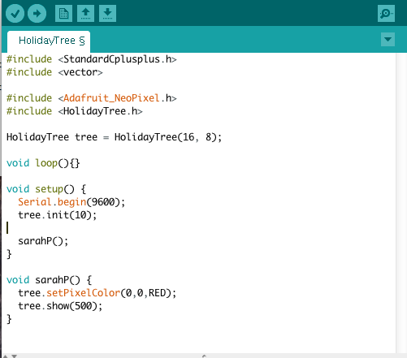

Holiday Lights
Light patterns with Arduino!
In this activity, you will create different patterns of colors using the power of Arduino. This Christmas tree has 16 strands of light, each with 8 special LEDs called "NeoPixels." Sounds like fun? Let's get started!
Ask Ms. Koo or Mrs. Marshall for a laptop to begin!
Setting up Terminal
- Use Spotlight Search to open "Terminal"
- Type "cd Desktop/s", then press tab, then enter.
- Type "git checkout -b", then space, then your first name and last initial as one word, then the word "master". For example: "git checkout -b SarahP master" Then press enter.
- Finally type "git push --set-upstream origin", then your first name and last initial. For example: "git push --set-upstream origin SarahP"
- Minimize the Terminal so that we can use it again later.
Open Arduino
- Use Spotlight Search to open "Arduino"
- Hit Command+O and find a file called HolidayTree.ino. It is in the folder sdmshoc2015/HolidayTree on the Desktop. Double-click to open it.

- Underneath the block of code called "setup()" we are going to create your own function. This is where you are going to write all your code!
Make sure your cursor is all the way past the final curly bracket (}) before typing:
void NAME(){
}
Replace NAME with your first name and last initial (same as what we used earlier).
- Before we start coding, we have to tell the computer to run your function. Add a call to the function INSIDE the "setup()" block by adding:
- The name of your function
- Two parentheses
- And a semicolon (;)
AFTER tree.init(10); but before the final curly bracket (}). Your code should look similar to the example in the picture.
Testing your code
- First, click "Verify" - that's the checkmark button in the top left corner of the window. This is like the "Spell-Check" of programming. If you see orange text, that means there's an error! Try to figure out what the problem is (usually, we're missing a semicolon or curly brace somewhere...) or call a teacher over for help.
- If everything checks out, Arduino will tell you how much memory your program used in white text. This means you can send the program to the server.
- Open the terminal
- Type git commit -a -m "Uploading Code", then press Enter.
- Type git push and press Enter. It will ask you for a username and password. Ms. Koo or Mrs. Marshall will give you the username and password to use!
- Now, ask a teacher to upload the code to the tree and see what it does!
API
API stands for "Application Program Interface." APIs explain what a piece of code can do and how you can use it to make your own programs.
Class: Holiday Tree
- HolidayTree(int nStrands, int nLights):
This creates an instance of the HolidayTree, telling the computer how many strands of lights there are, and how many lights are on each strand.
- init(int brightness):
Sets initial values and takes care of behind-the-scenes setup for the entire tree.
- setLightColor(int strandNum, int light, Color color):
Allows the user to set the color of a single light. Give the "X" coordinate (which strand it's on) and the "Y" coordinate (which light on the strand). Use Enum: Color for a list of colors that can be used. Must call show(int ms) for this to have an effect.
- setLightColor(int strandNum, int light, int red, int green, int blue):
Same as above, but colors are represented by R, G, and B values which can be any number between 0 (off) and 255 (max). Read More...
- setRowColor(int rowNum, Color color):
Sets an entire row (horizontal) to be one color. Give the "Y" coordinate of the row and the color (see Enum: Color). Must call show(int ms) for this to have an effect.
- setRowColor(int rowNum, int red, int green, int blue):
Same as above, but with R, G, and B values.
- setColumnColor(int colNum, Color color):
Sets an entire column (vertical) to be one color. Give the "X" coordinate of the row and the color (see Enum: Color). Must call show(int ms) for this to have an effect.
- setColumnColor(int colNum, int red, int green, int blue):
Same as above, but with R, G, and B values.
- show(int ms):
Sends the values to the lights. Pauses for given amount of time in miliseconds before executing next command.
- reset():
Turns all lights on the tree off. Must call show(int ms) for this to have an effect.
- getNumStrands():
Returns the number of strands that are on the tree as an integer.
- getNumLights():
Returns the number of lights per strand that are on the tree as an integer.
Enum: Color
- RED
- ORANGE
- YELLOW
- GREEN
- CYAN
- BLUE
- PURPLE
- MAGENTA
- WHITE